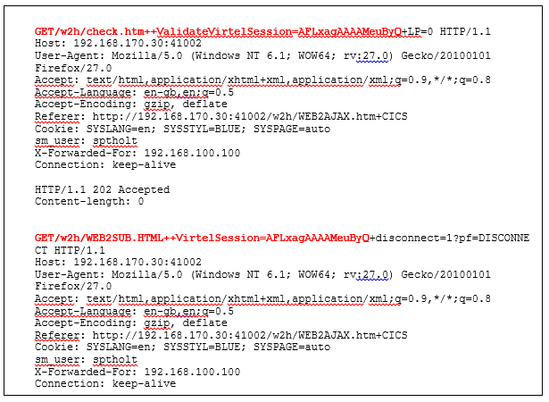

Overview of a Virtel Session¶
Virtel uses APIs provided by other protocols such as HTTP, TCP/IP, SNA to support Virtel session endpoints between a Web Browser and VTAM application. These underlying protocols are well documented in IBM manuals and/or other manuals. From an end to end session perspective Virtel acts like a conduit passing data between the HTTP session through to the CICS application. However, there are two faces that Virtel presents, one for each protocol. To the internet it acts like a HTTP Web server and to CICS like a 3270 logical unit:-
Within the Virtel logic, data is transformed between SNA and HTTP presentation formats, depending on the data flow. With regard to states, at higher levels, a session state can be either in a send state or receive state. In effect though, at a lower level the HTTP side is stateless (HTTP is a stateless protocol), whereas on the VTAM side the SNA protocol demands a stateful protocol. Virtel internally manages the overall session state between these protocols for any one session. Virtel employs AJAX long polling and other web technologies to maintain state on the Web side of the session and confirms to SNA protocols as described in the VTAM programming manual. See IBM SNA Network Product Formats LY43_0081 for details on SNA formats and Data Flow.
Session establishment
A session is establish through a user opening a browser window to a defined Virtel URL. For example http:
http://192.168.170.15:41002/w2h/WEB2AJAX.htm+TSO1A?logmode=D4A32XX3&rows=52&cols=132
It is the URI which determines what Virtel is to do on behalf of the user. In the above example the user is requesting that Virtel establish a SNA session to TSO. Logical the session between the user and TSO will now comprise of two half session elements. One half session representing the Web Server to Web Browser, another representing a SNA Logical unit to VTAM.
Session establish on the Web Server side is triggered through the Z/OS TCP/IP stack receiving a packet from the web browser with the SYN bit set to 1. This will cause Virtel to open a socket with the web browser. In is not the intention of this document to detail TCP connection logic and hand shaking. See Web Protocols and Practices. Balachander Krishnamurthy & Jennifer Rexford.
After opening the socket, Virtel will inspect the URI passed and determine an appropriate action. In this case it will establish a SNA VTAM session to TSO through the use of the REQSESS VTAM macro. This will open a logical unit session to the TSO application as requested in the URI. Of course this can be any VTAM application, for example CICS. The Virtel Connectivity manual documents the URI formats. This new SNA relay session will now support the SNA session between Virtel and the TSO application. Data flow will now commence between the Web client (Users Browser window) and the TSO application. Presentation data will be converted by Virtel between HTTP and SNA formats and the independent half session states that represent the each session half, web on one side, SNA on the other, will be managed by Virtel internal logic.
Session disconnection
When Virtel determines that a session has been disconnected it will close the supporting SNA relay session. Session disconnection can present itself to Virtel in many forms. From the user closing a window; triggered by the user pressing the “Disconnect” button in the Virtel OIA, or simplying turning the PC off. Virtel employs various mechanisms and timers as part of its internal state manager to detect whether the web half session is still “alive”. As HTTP is stateless it has no underlying “are you there” handshake mechanism and as such it is up to Virtel to determine if the web session is still active.
Session affinity
It is important that session affinity is maintained between a user’s browser session and the VTAM application. Virtel maintains affinity on the web side session id through the use of HTTP parameters. A Virtel line trace will reveal the protocol flow between the web browser and Virtel. Here can be seen the session ids that Virtel maintains in order to identify a particular session. The session id logic is handled and managed by Virtel’s internal session manager. An example of a line trace is shown below:-

Loss of affinity will cause unpredictable results as Virtel will not be able to tie up the two half sessions. Loss of affinity can result from network configurations which do not employ affinity technologies. For example IBMs Sysplex Distributor requires the TIMEDAFF parameter to be specified. If Proxy Servers are used than the “Sticky Session” feature must be set. See z/OS Communications Server: IP Configuration Reference SC27-3651-00.
For more information on setting up a Sysplex Distributor or visit http://httpd.apache.org/docs/2.2/mod/mod_proxy_balancer.html for further information on “sticky sessions”. In the following configuration an Apache Proxy Server is used to balance sessions request across two Virtel instances running on separate z/OS LPARS:-
{kind=link}
Cache storage considerations
On the web side Virtel runs as a web server and therefore is subjected to the protocols of the underlying browser support, be it IE, Chrome or whatever browser support is utilized by the user. The standard logic is such that when the user opens a Virtel session by specifying a Virtel URI, Virtel will download the necessary HTML, CSS and Javacript elements. The browser will maintain these elements in storage, in this instance in the browsers cache storage. Most of these elements are static in nature, once in the browser’s cache they needn’t be served again. However, dynamic elements such as user macros, which are also maintained in the browser’s cache need to be reflected back to the Virtel TRSF file(s). The transfer of these elements is performed by Virtel through various web technologies. For example JSON array to reflect user macros. Virtel will enforce a storage cache refresh for some elements in certain conditions. For example, if a new copy of a JavaScript element is to be served as part of a maintenance upgrade, Virtel will ensure that the new JavaScript element is downloaded and updated in the browsers cache.
Session example.
In this scenario we look at a session between a browser and CICS with Virtel providing the HTTP server and SNA conduit services. The underlying network infrastructure is a Sysplex Distributor sharing load between two TCP/IP target stacks running on separate LPARS.
Each LPAR runs an instance of Virtel. The CLI access port is defined as 170.15/24 in both the SPVIR1A and SPVIR2A ARBO definitions.
The TCPIP VIPA definitions in MVS1A look like:-
; 192.168.170.20 SPVIRMAN for VIPARANGE test
; 192.168.170.15 VIPA for SPVIR1A and SPVIR2A distribution tests
VIPADYNAMIC
VIPARANGE DEFINE MOVEABLE NONDISRUPTIVE 255.255.255.0 192.168.170.20
VIPADEFINE MOVE IMMED 255.255.255.0 192.168.170.15
VIPADISTRIBUTE DEFINE TIMEDAFF 300 DISTMETHOD ROUNDROBIN 192.168.170.15
DESTIP ALL
ENDVIPADYNAMIC
The TCPIP VIPA definitions in MVS2A look like. It is a target for 170.15/24. Nothing special is defined.
VIPADYNAMIC
VIPARANGE DEFINE MOVEABLE NONDISRUPT 255.255.255.0 192.168.170.20
ENDVIPADYNAMIC
The SYSPLEX distributor will distribute sessions between MVS1A and MVS2A in a round robin fashion. Not that this based up a new IP address not a new browser session.
IP Schematic
+------> TCP/IP (92.161/24) MVS1A - > VTAM – SPVIR1A
Terminal -> SD (170.15/24) |
+------> TCP/IP (92.162/24) MVS1B - > VTAM – SPVIR2A
zOS setup
MVS1A SPVIR1A(STC), SPCICSH(STC)
MVS1B SPVIR2A(STC)
SPVIR1A ACB = VIRTEL1A (Only used for Admin. Functions)
SPVIR2A ACB = VIRTEL2A (Only used for Admin. Functions)
Sysplex Distributor (SD) running on MVSA
Session Status before terminal establishes a session with Virtel using
the following URL:-
192.168.170.15:41002
z/OS Command : D TCPIP,,N,CONN,MAX=*

The SD setup shows the SD running on MVSA and target stacks on both MVS1A and MVS1B. Note that port 41002 is associated with the SD and the ADMIN port 41015 is associated with the specific instance of Virtel running on MVS2A on IP address 192.168.92.162. On MVS1A we have a similar display for SPVIR1A.
{kind=link}
z/OS Command : D TCPIP,,SYSPLEX,VIPAD
{kind=link}
After opening a HTTP session with Virtel we can see the Virtel server will initialize the browser environment by sending the necessary HTML elements to support Virtel running within the browser environment.
{kind=link}
If we take a look at the Virtel log we can see which element names have been downloaded and there source directories.
{kind=link}
In the Virtel JESMSGLG log we can see that Virtel is using the CLI-DIR (Customized elements) and the W2H-DIR (distributed elements) directories; These directories have been accessed by Virtel to download HTML elements to the users’s browser environment.
If we now look at the session setup now we should see some sockets established with Virtel and the user’s terminal.
{kind=link}
On the user’s terminal their browser window will have the Virtel Application Menu screen. This is the default for the URI 192.168.170.15:41002 that we used when establishing a session with Virtel.
{kind=link}
We can see from this screen that the TSO and CICS applications are active (Green). Login to CICS will drive Virtel to establish SNA relay sessions with the target CICS application.
Logging on to CICS from the Virtel Application Menu screen we get the CICS logon panel.

We can see from the screen that the two VTAM relay LUs that Virtel has provided to support this session is R2AVT000 (Terminal) and R2AIM000(Printer). Session status for CICS in VTAM looks like this:

…..and Virtel’s relay LU in VTAM looks like:-

We can logon to CICS and have a look at the CICS view.
{kind=link}
Finally, to summarize; the end-to-end session for this particular Virtel session looks like this :-
Term. <---> VIRTEL/IP <---> VIRTEL/SNA <–--> R2AVT000 <---> SPCICSH
<----- VIRTEL STC ------> <----- CICS STC ----->
<-------- HTTP --------><------------- 3270 DataStreams ---------->
<------- TCP/IP -------><-------------------- SNA ---------------->